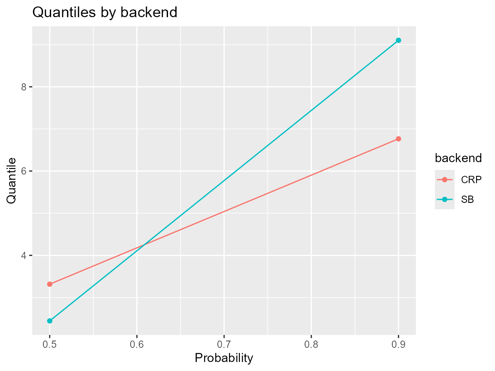

library(DPmixGPD)
library(nimble)
use_cached_fit <- TRUE
.fit_path <- function(name) {
path <- system.file("extdata", name, package = "DPmixGPD")
if (path == "") path <- file.path("inst", "extdata", name)
path
}
fit_small <- readRDS(.fit_path("fit_small.rds"))
fit_small_crp <- readRDS(.fit_path("fit_small_crp.rds"))
library(ggplot2)
y <- sim_bulk_tail(n = 150, tail_prob = 0.08, seed = 101)
common_args <- list(
y = y,
kernel = "lognormal",
GPD = TRUE,
J = 6,
mcmc = list(niter = 200, nburnin = 50, thin = 2, nchains = 2, seed = c(1, 2))
)
if (use_cached_fit) {
fit_sb <- fit_small
fit_crp <- fit_small_crp
sb_time <- c(elapsed = NA_real_)
crp_time <- c(elapsed = NA_real_)
} else {
sb_time <- system.time({
bundle_sb <- do.call(build_nimble_bundle, c(list(backend = "sb"), common_args))
fit_sb <- run_mcmc_bundle_manual(bundle_sb)
})
crp_time <- system.time({
bundle_crp <- do.call(build_nimble_bundle, c(list(backend = "crp"), common_args))
fit_crp <- run_mcmc_bundle_manual(bundle_crp)
})
}
system_time <- data.frame(
backend = c("SB", "CRP"),
elapsed = c(sb_time[["elapsed"]], crp_time[["elapsed"]])
)
system_time
#> backend elapsed
#> 1 SB NA
#> 2 CRP NA
q_sb <- predict(fit_sb, type = "quantile", p = c(0.5, 0.9))
q_crp <- predict(fit_crp, type = "quantile", p = c(0.5, 0.9))
data.frame(
backend = rep(c("SB", "CRP"), each = 2),
prob = rep(c(0.5, 0.9), 2),
quantile = c(as.numeric(q_sb$fit), as.numeric(q_crp$fit))
) |>
ggplot(aes(x = prob, y = quantile, color = backend)) +
geom_point() +
geom_line() +
labs(title = "Quantiles by backend", y = "Quantile", x = "Probability")
quantiles_sb <- predict(fit_sb, type = "quantile", p = c(.95, .99))
quantiles_crp <- predict(fit_crp, type = "quantile", p = c(.95, .99))
list(sb = quantiles_sb, crp = quantiles_crp)
#> $sb
#> $sb$fit
#> [,1] [,2]
#> [1,] 9.279874 10.1547
#>
#> $sb$lower
#> NULL
#>
#> $sb$upper
#> NULL
#>
#> $sb$type
#> [1] "quantile"
#>
#> $sb$grid
#> [1] 0.95 0.99
#>
#> $sb$draws
#> , , 1
#>
#> [,1]
#> [1,] 6.929665
#> [2,] 9.958749
#> [3,] 7.866946
#> [4,] 7.291517
#> [5,] 8.695036
#> [6,] 7.824644
#> [7,] 8.576632
#> [8,] 10.926664
#> [9,] 11.449937
#> [10,] 10.852902
#> [11,] 9.323045
#> [12,] 9.995353
#> [13,] 11.011613
#> [14,] 8.606066
#> [15,] 10.157453
#> [16,] 9.665001
#> [17,] 10.551923
#> [18,] 9.373644
#> [19,] 7.118737
#> [20,] 7.219051
#> [21,] 8.991530
#> [22,] 8.422021
#> [23,] 8.245483
#> [24,] 10.600519
#> [25,] 9.030669
#> [26,] 11.626650
#> [27,] 12.137861
#> [28,] 11.299427
#> [29,] 10.045535
#> [30,] 11.666167
#> [31,] 10.016763
#> [32,] 8.981712
#> [33,] 10.616308
#> [34,] 8.548509
#> [35,] 9.463882
#> [36,] 8.134691
#> [37,] 6.925275
#> [38,] 7.877141
#> [39,] 7.447362
#> [40,] 7.722888
#>
#> , , 2
#>
#> [,1]
#> [1,] 6.940669
#> [2,] 10.001269
#> [3,] 7.892106
#> [4,] 8.047300
#> [5,] 8.730017
#> [6,] 7.898060
#> [7,] 8.635948
#> [8,] 10.974305
#> [9,] 11.514343
#> [10,] 10.908402
#> [11,] 9.368573
#> [12,] 10.025695
#> [13,] 11.052129
#> [14,] 8.662864
#> [15,] 10.187352
#> [16,] 9.726254
#> [17,] 10.599216
#> [18,] 9.408858
#> [19,] 7.959782
#> [20,] 8.077162
#> [21,] 12.771266
#> [22,] 11.991325
#> [23,] 9.614849
#> [24,] 10.638202
#> [25,] 9.075780
#> [26,] 11.656349
#> [27,] 12.186191
#> [28,] 11.361047
#> [29,] 10.126874
#> [30,] 11.704180
#> [31,] 10.048769
#> [32,] 12.580507
#> [33,] 15.995817
#> [34,] 10.667164
#> [35,] 10.028026
#> [36,] 10.683938
#> [37,] 8.178431
#> [38,] 10.217301
#> [39,] 10.502276
#> [40,] 9.549562
#>
#>
#>
#> $crp
#> $crp$fit
#> [,1] [,2]
#> [1,] 6.813156 7.436865
#>
#> $crp$lower
#> NULL
#>
#> $crp$upper
#> NULL
#>
#> $crp$type
#> [1] "quantile"
#>
#> $crp$grid
#> [1] 0.95 0.99
#>
#> $crp$draws
#> , , 1
#>
#> [,1]
#> [1,] 5.973889
#> [2,] 4.143095
#> [3,] 6.303017
#> [4,] 5.393639
#> [5,] 5.665007
#> [6,] 5.704462
#> [7,] 5.575355
#> [8,] 4.981130
#> [9,] 6.817053
#> [10,] 5.504416
#> [11,] 7.880743
#> [12,] 7.417320
#> [13,] 7.168920
#> [14,] 7.647529
#> [15,] 7.189945
#> [16,] 7.918183
#> [17,] 7.533366
#> [18,] 7.527035
#> [19,] 6.358586
#> [20,] 6.992188
#> [21,] 6.194547
#> [22,] 7.324317
#> [23,] 9.923598
#> [24,] 7.237262
#> [25,] 5.121328
#> [26,] 7.279319
#> [27,] 5.884030
#> [28,] 5.847272
#> [29,] 7.850104
#> [30,] 7.844092
#> [31,] 8.429925
#> [32,] 7.181795
#> [33,] 7.530765
#> [34,] 6.177192
#> [35,] 5.588682
#> [36,] 5.984462
#> [37,] 6.832751
#> [38,] 8.907594
#> [39,] 7.827805
#> [40,] 7.864514
#>
#> , , 2
#>
#> [,1]
#> [1,] 6.011731
#> [2,] 5.435727
#> [3,] 6.377426
#> [4,] 6.014438
#> [5,] 5.740942
#> [6,] 7.003482
#> [7,] 6.810887
#> [8,] 7.187809
#> [9,] 6.849723
#> [10,] 5.575837
#> [11,] 7.914270
#> [12,] 7.469354
#> [13,] 7.226623
#> [14,] 7.700364
#> [15,] 7.251031
#> [16,] 7.953103
#> [17,] 7.597097
#> [18,] 7.660414
#> [19,] 6.436706
#> [20,] 7.133989
#> [21,] 9.146687
#> [22,] 7.368526
#> [23,] 9.966790
#> [24,] 10.909731
#> [25,] 6.816527
#> [26,] 7.689156
#> [27,] 5.950959
#> [28,] 7.934071
#> [29,] 7.899707
#> [30,] 7.878669
#> [31,] 9.484708
#> [32,] 7.262317
#> [33,] 9.293618
#> [34,] 7.151952
#> [35,] 6.236860
#> [36,] 6.943981
#> [37,] 6.888865
#> [38,] 8.933634
#> [39,] 8.422049
#> [40,] 7.944840
sessionInfo()
#> R version 4.5.2 (2025-10-31 ucrt)
#> Platform: x86_64-w64-mingw32/x64
#> Running under: Windows 11 x64 (build 26100)
#>
#> Matrix products: default
#> LAPACK version 3.12.1
#>
#> locale:
#> [1] LC_COLLATE=English_United States.utf8
#> [2] LC_CTYPE=English_United States.utf8
#> [3] LC_MONETARY=English_United States.utf8
#> [4] LC_NUMERIC=C
#> [5] LC_TIME=English_United States.utf8
#>
#> time zone: America/New_York
#> tzcode source: internal
#>
#> attached base packages:
#> [1] stats graphics grDevices datasets utils methods base
#>
#> other attached packages:
#> [1] ggplot2_4.0.1 nimble_1.4.0 DPmixGPD_0.0.8
#>
#> loaded via a namespace (and not attached):
#> [1] sass_0.4.10 future_1.68.0 generics_0.1.4
#> [4] renv_1.1.5 lattice_0.22-7 listenv_0.10.0
#> [7] pracma_2.4.6 digest_0.6.39 magrittr_2.0.4
#> [10] evaluate_1.0.5 grid_4.5.2 RColorBrewer_1.1-3
#> [13] fastmap_1.2.0 jsonlite_2.0.0 scales_1.4.0
#> [16] codetools_0.2-20 numDeriv_2016.8-1.1 textshaping_1.0.4
#> [19] jquerylib_0.1.4 cli_3.6.5 rlang_1.1.6
#> [22] parallelly_1.46.0 future.apply_1.20.1 withr_3.0.2
#> [25] cachem_1.1.0 yaml_2.3.12 otel_0.2.0
#> [28] tools_4.5.2 parallel_4.5.2 coda_0.19-4.1
#> [31] dplyr_1.1.4 globals_0.18.0 vctrs_0.6.5
#> [34] R6_2.6.1 lifecycle_1.0.4 fs_1.6.6
#> [37] htmlwidgets_1.6.4 ragg_1.5.0 pkgconfig_2.0.3
#> [40] desc_1.4.3 pkgdown_2.2.0 bslib_0.9.0
#> [43] pillar_1.11.1 gtable_0.3.6 glue_1.8.0
#> [46] systemfonts_1.3.1 tidyselect_1.2.1 tibble_3.3.0
#> [49] xfun_0.55 knitr_1.51 farver_2.1.2
#> [52] htmltools_0.5.9 igraph_2.2.1 labeling_0.4.3
#> [55] rmarkdown_2.30 compiler_4.5.2 S7_0.2.1